library(readxl)
library(dplyr)
Attaching package: 'dplyr'The following objects are masked from 'package:stats':
filter, lagThe following objects are masked from 'package:base':
intersect, setdiff, setequal, unionlibrary(ggplot2)Solbee Kim
October 18, 2026
Attaching package: 'dplyr'The following objects are masked from 'package:stats':
filter, lagThe following objects are masked from 'package:base':
intersect, setdiff, setequal, union
[1] "C:/Users/User/OneDrive/[PhD] UT-Dallas/- Coursework/[3rd] 2026F/[EPPS 6356] Data Visualization/SolB-Kim.github.io/assignments" [1] "assign01.qmd"
[2] "assign02.qmd"
[3] "assign03.qmd"
[4] "assign04.qmd"
[5] "assign05.qmd"
[6] "assign06.qmd"
[7] "EPPS6356_assign01.qmd"
[8] "EPPS6356_assign02.qmd"
[9] "EPPS6356_assign03.qmd"
[10] "EPPS6356_assign05.html"
[11] "EPPS6356_assign05.qmd"
[12] "EPPS6356_assign05.rmarkdown"
[13] "EPPS6356_assign05.Rmd"
[14] "EPPS6356_assign05_files"
[15] "GRB2025.xlsx"
[16] "Happy-Planet-Index-2006-2025-public-data-set.xlsx"
[17] "owid-covid-data.csv"
[18] "rd.jpg"
[19] "scatter_baseR.bmp"
[20] "scatter_baseR.jpg"
[21] "scatter_baseR.pdf"
[22] "scatter_baseR.png"
[23] "scatter_baseR.svg"
[24] "scatter_baseR.tiff"
[25] "scatter_ggplot.bmp"
[26] "scatter_ggplot.jpg"
[27] "scatter_ggplot.pdf"
[28] "scatter_ggplot.png"
[29] "scatter_ggplot.svg"
[30] "scatter_ggplot.tiff" [1] "Intro" "1. All countries" "2. Country Grapher"
[4] "3. Regions Graph" "4. Gender differences" "5. Data Sources"
[7] "Cont data" "All Data" "country codes"
[10] "Lookups" Warning: Expecting logical in V2436 / R2436C22: got 'A'Warning: Expecting logical in W2436 / R2436C23: got 'Year_lookup!A1:A2'Warning: Expecting logical in V2437 / R2437C22: got 'B'Warning: Expecting logical in W2437 / R2437C23: got 'Year_lookup!B1:B2'Warning: Expecting logical in V2438 / R2438C22: got 'C'Warning: Expecting logical in W2438 / R2438C23: got 'Year_lookup!C1:C2'Warning: Expecting logical in V2439 / R2439C22: got 'D'Warning: Expecting logical in W2439 / R2439C23: got 'Year_lookup!D1:D2'Warning: Expecting logical in V2440 / R2440C22: got 'E'Warning: Expecting logical in W2440 / R2440C23: got 'Year_lookup!E1:E2'Warning: Expecting logical in W2441 / R2441C23: got 'Year_lookup!F1:F2'Warning: Expecting logical in V2442 / R2442C22: got 'G'Warning: Expecting logical in W2442 / R2442C23: got 'Year_lookup!G1:G2'Warning: Expecting logical in V2443 / R2443C22: got 'H'Warning: Expecting logical in W2443 / R2443C23: got 'Year_lookup!H1:H2'Warning: Expecting logical in V2444 / R2444C22: got 'I'Warning: Expecting logical in W2444 / R2444C23: got 'Year_lookup!I1:I2'Warning: Expecting logical in V2445 / R2445C22: got 'J'Warning: Expecting logical in W2445 / R2445C23: got 'Year_lookup!J1:J2'Warning: Expecting logical in V2446 / R2446C22: got 'K'Warning: Expecting logical in W2446 / R2446C23: got 'Year_lookup!K1:K2'Warning: Expecting logical in V2447 / R2447C22: got 'L'Warning: Expecting logical in W2447 / R2447C23: got 'Year_lookup!L1:L2'Warning: Expecting logical in V2448 / R2448C22: got 'M'Warning: Expecting logical in W2448 / R2448C23: got 'Year_lookup!M1:M2'Warning: Expecting logical in V2449 / R2449C22: got 'N'Warning: Expecting logical in W2449 / R2449C23: got 'Year_lookup!N1:N2'Warning: Expecting logical in V2450 / R2450C22: got 'O'Warning: Expecting logical in W2450 / R2450C23: got 'Year_lookup!O1:O2'Warning: Expecting logical in V2451 / R2451C22: got 'P'Warning: Expecting logical in W2451 / R2451C23: got 'Year_lookup!P1:P2'New names:
• `` -> `...15`
• `` -> `...21`
• `` -> `...22`
• `` -> `...23` [1] "HPI rank"
[2] "Country"
[3] "ISO"
[4] "Continent"
[5] "Population"
[6] "Year"
[7] "Life Expectancy"
[8] "Life Satisfaction"
[9] "Ecological Footprint"
[10] "CoV adjusted ladder"
[11] "Adj Lad x Life Exp"
[12] "Extra HPLY (above min)"
[13] "CoV Adj Footprint"
[14] "HPLY/EF"
[15] "...15"
[16] "HPI"
[17] "Footprint category"
[18] "EF biocapacity for year"
[19] "GDP per capita"
[20] "GDP per capita (cleaned) - 2024 used for 2025"
[21] "...21"
[22] "...22"
[23] "...23" # A tibble: 6 × 23
`HPI rank` Country ISO Continent Population Year `Life Expectancy`
<dbl> <chr> <chr> <dbl> <dbl> <dbl> <dbl>
1 130 Central African… CAF 5 4529. 2009 14.7
2 NA Central African… CAF 5 5098. 2022 18.8
3 NA Central African… CAF 5 4945. 2019 31.5
4 NA Somalia SOM 5 12349. 2011 32.5
5 NA Central African… CAF 5 4623. 2014 40.3
6 NA Central African… CAF 5 5112. 2021 40.3
# ℹ 16 more variables: `Life Satisfaction` <dbl>, `Ecological Footprint` <dbl>,
# `CoV adjusted ladder` <dbl>, `Adj Lad x Life Exp` <dbl>,
# `Extra HPLY (above min)` <dbl>, `CoV Adj Footprint` <dbl>, `HPLY/EF` <dbl>,
# ...15 <chr>, HPI <dbl>, `Footprint category` <dbl>,
# `EF biocapacity for year` <dbl>, `GDP per capita` <dbl>,
# `GDP per capita (cleaned) - 2024 used for 2025` <dbl>, ...21 <lgl>,
# ...22 <lgl>, ...23 <lgl># Continent
continent <- c(
"1" = "Latin America",
"2" = "North America & Oceania",
"3" = "Western Europe",
"4" = "Middle East",
"5" = "Africa",
"6" = "South Asia",
"7" = "Eastern Europe & Central Asia",
"8" = "East Asia"
)
rainbow <- c("#FFADAD", "#FFC6FF", "#F0E68C", "#CAFCCF",
"#9BF6FF", "#A0C4FF", "#BDB2FF", "#FFD6A5")
set <- function() {
op <- par(
family = "serif",
font.main = 2,
cex.main = 1.1,
cex.lab = 0.9,
cex.axis = 0.8,
col.axis = "gray30",
col.lab = "gray20",
fg = "gray40",
las = 1,
mar = c(5, 5, 4, 2)
)
invisible(op)
}
hpi2025 <- hpi %>%
filter(Year == 2025) %>%
mutate(Continent = continent[as.character(Continent)])
nrow(hpi2025)[1] 153# A tibble: 6 × 23
`HPI rank` Country ISO Continent Population Year `Life Expectancy`
<dbl> <chr> <chr> <chr> <dbl> <dbl> <dbl>
1 1 Costa Rica CRI Latin America 5153. 2025 81.2
2 2 Guatemala GTM Latin America 18688. 2025 72.9
3 3 Tajikistan TJK Eastern Europ… 10787. 2025 72.1
4 4 Spain ESP Western Europe 47890. 2025 84.0
5 5 Colombia COL Latin America 53426. 2025 78.1
6 6 Switzerland CHE Western Europe 8967. 2025 84.2
# ℹ 16 more variables: `Life Satisfaction` <dbl>, `Ecological Footprint` <dbl>,
# `CoV adjusted ladder` <dbl>, `Adj Lad x Life Exp` <dbl>,
# `Extra HPLY (above min)` <dbl>, `CoV Adj Footprint` <dbl>, `HPLY/EF` <dbl>,
# ...15 <chr>, HPI <dbl>, `Footprint category` <dbl>,
# `EF biocapacity for year` <dbl>, `GDP per capita` <dbl>,
# `GDP per capita (cleaned) - 2024 used for 2025` <dbl>, ...21 <lgl>,
# ...22 <lgl>, ...23 <lgl>
op <- set()
hist(hpi2025$HPI,
breaks = 15,
col = "#6B8E6F",
border = "white",
main = "Distribution of Happy Planet Index Scores (2025)",
xlab = "Happy Planet Index (HPI) Score",
ylab = "Number of Countries")
abline(v = mean(hpi2025$HPI, na.rm = TRUE), col = "darkorange", lwd = 2, lty = 2)
# Mean label placed in the top margin, directly above the line
mtext(paste("Mean =", round(mean(hpi2025$HPI, na.rm = TRUE), 1)),
side = 3, at = mean(hpi2025$HPI, na.rm = TRUE),
line = 0.3, col = "firebrick", cex = 0.8, font = 4)
mtext("Source: Happy Planet Index, 2025 data", side = 1, line = 4, cex = 0.7, adj = 1)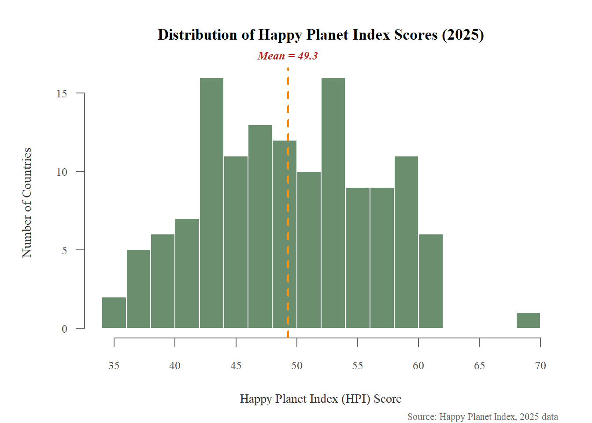
op <- set()
par(mar = c(7, 5, 4, 2), xpd = TRUE)
cont_avg <- hpi2025 %>%
group_by(Continent) %>%
summarise(mean_HPI = mean(HPI, na.rm = TRUE)) %>%
arrange(mean_HPI)
bp <- barplot(cont_avg$mean_HPI,
axisnames = FALSE,
col = rainbow,
border = "white",
main = "Average HPI Score by Continent (2025)",
ylab = "Mean HPI Score",
ylim = c(0, max(cont_avg$mean_HPI) * 1.15))
wrapped_labels <- sapply(cont_avg$Continent, function(x) paste(strwrap(x, width = 10), collapse = "\n"))
text(x = bp, y = -3, labels = wrapped_labels, adj = c(0.5, 1), cex = 0.65)
text(bp, cont_avg$mean_HPI, labels = round(cont_avg$mean_HPI, 1),
pos = 3, cex = 0.7, col = "gray20")
title(xlab = "Continent", line = 3.5, adj = 0.5)
mtext("*Source: Happy Planet Index", side = 1, line = 4.5, cex = 0.7, adj = 1)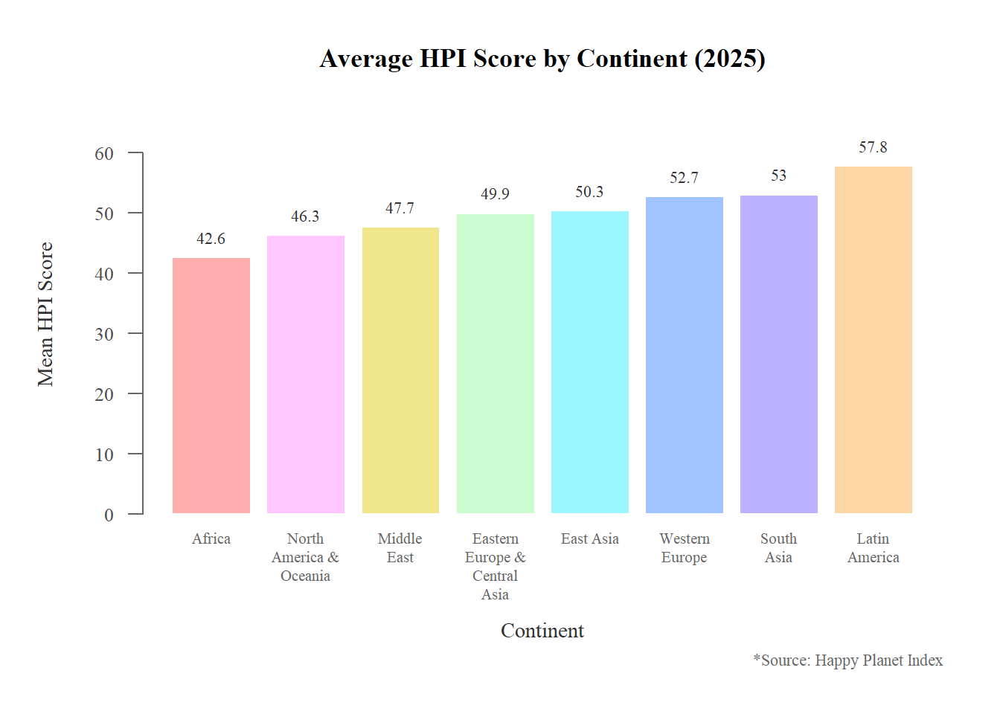
op <- set()
par(mar = c(5, 10, 4, 2))
bp2 <- barplot(cont_avg$mean_HPI,
names.arg = cont_avg$Continent,
horiz = TRUE,
col = rainbow,
border = "white",
main = "Average HPI Score by Continent (2025)",
xlab = "Mean HPI Score",
las = 1,
cex.names = 0.75,
xlim = c(0, max(cont_avg$mean_HPI) * 1.15))
text(cont_avg$mean_HPI, bp2, labels = round(cont_avg$mean_HPI, 1),
pos = 4, cex = 0.7, col = "gray20")
mtext("*Source: Happy Planet Index", side = 1, line = 3.5, cex = 0.7, adj = 1)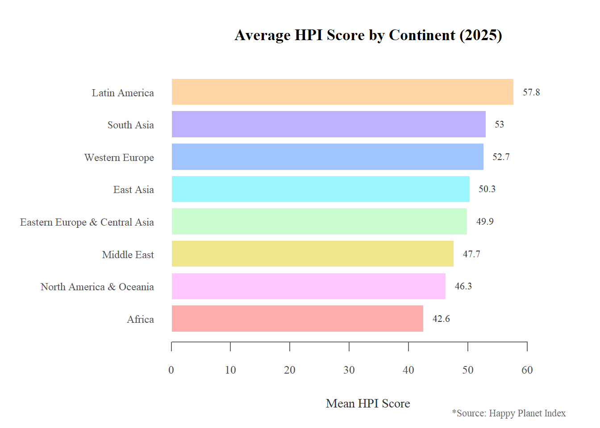
op <- set()
par(mar = c(3, 2, 4, 2)) # back to tighter margins since no legend needed
cont_count <- table(hpi2025$Continent)
cont_count <- cont_count[cont_avg$Continent]
pie(cont_count,
labels = paste0(names(cont_count), "\n", round(100 * cont_count / sum(cont_count), 1), "%"),
col = rainbow,
main = "Share of Countries by Continent, 2025",
cex = 0.85,
radius = 1,
clockwise = TRUE,
init.angle = 90)
mtext("*Source: Happy Planet Index", side = 1, line = 1, cex = 0.7, adj = 1)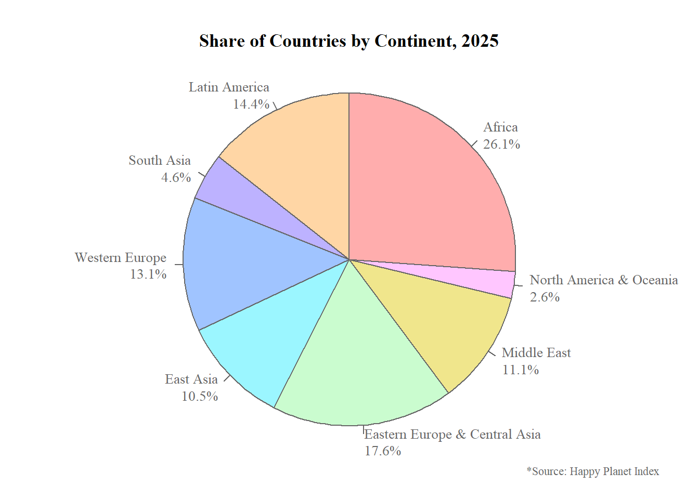
hpi2025$Continent <- factor(hpi2025$Continent, levels = cont_avg$Continent)
op <- set()
par(mar = c(7, 5, 4, 6), xpd = TRUE)
bx <- boxplot(HPI ~ Continent, data = hpi2025,
col = rainbow,
border = "gray30",
main = "Distribution of HPI Scores by Continent (2025)",
ylab = "Happy Planet Index (HPI) Score",
xlab = "",
xaxt = "n")
wrapped_labels <- sapply(levels(hpi2025$Continent), function(x) paste(strwrap(x, width = 10), collapse = "\n"))
text(x = seq_along(wrapped_labels), y = par("usr")[3] - 3,
labels = wrapped_labels, adj = c(0.5, 1), cex = 0.6, xpd = TRUE)
title(xlab = "Continent", line = 3.5, adj = 0.5)
# Annotation: overall median line, clipped to stay inside the plot box
par(xpd = FALSE)
abline(h = median(hpi2025$HPI, na.rm = TRUE), col = "firebrick", lty = 2, lwd = 1.5)
par(xpd = TRUE)
med <- median(hpi2025$HPI, na.rm = TRUE)
mtext("Overall median", side = 4.5, at = med + 1,
col = "firebrick", cex = 0.6, las = 1, line = 0.3)
mtext(paste0("(", round(med, 1), ")"), side = 4.5, at = med - 1,
col = "firebrick", cex = 0.6, las = 1, line = 0.3)
mtext("*Source: Happy Planet Index", side = 1, line = 4.5, cex = 0.7, adj = 1)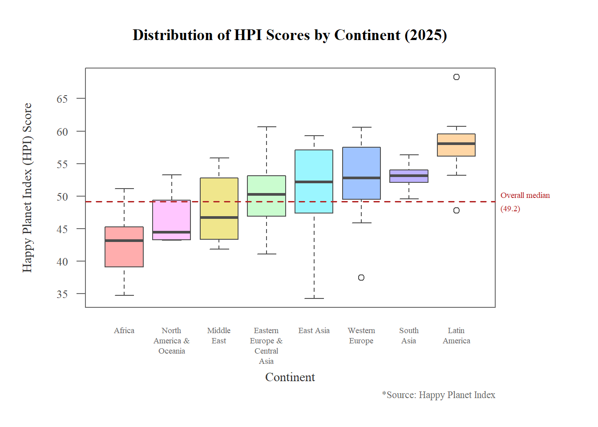
op <- set()
par(mar = c(5, 5, 4, 13), mgp = c(2.3, 1, 0), xpd = TRUE)
plot(hpi2025$`Ecological Footprint`, hpi2025$`Life Expectancy`,
col = adjustcolor(rainbow[as.numeric(hpi2025$Continent)], alpha.f = 0.8),
pch = 16,
cex = 1.1,
main = "Life Expectancy vs. Ecological Footprint (2025)",
xlab = "Ecological Footprint (global hectares per person)",
ylab = "Life Expectancy (years)")
legend_labels <- gsub("Eastern Europe & Central Asia", "Eastern Europe &\nCentral Asia", levels(hpi2025$Continent))
legend_x <- par("usr")[2] * 1.05
y_range <- diff(par("usr")[3:4])
title_y <- par("usr")[4] - 0.02 * y_range
legend_y <- par("usr")[4] - 0.08 * y_range
leg <- legend(x = legend_x, y = legend_y,
legend = legend_labels,
col = rainbow, pch = 16, cex = 0.8, bty = "n",
y.intersp = 1.3)
# Center the title over the legend's actual rendered width
center_x <- leg$rect$left + leg$rect$w / 2
text(x = center_x, y = title_y, labels = "Continent",
font = 2, cex = 0.9, adj = 0.5)
top_country <- hpi2025[which.max(hpi2025$`Life Expectancy`), ]
text(top_country$`Ecological Footprint`, top_country$`Life Expectancy`,
labels = top_country$Country, pos = 3, cex = 0.7)
mtext("*Source: Happy Planet Index", side = 1, line = 3.5, cex = 0.7, adj = 1)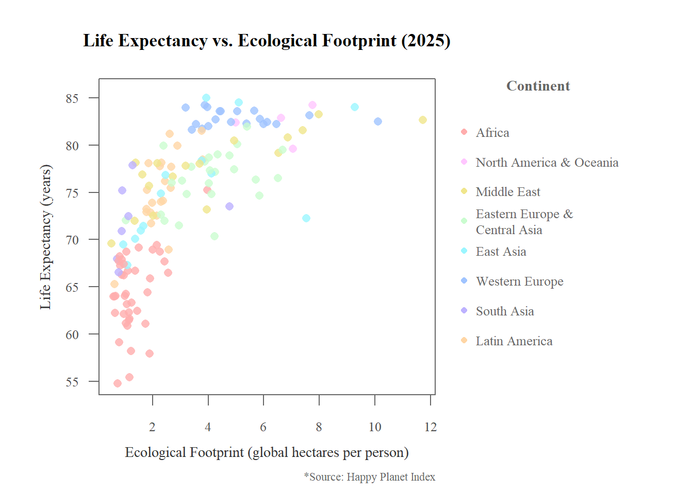
theme_mine <- function(base_size = 11) {
theme_minimal(base_size = base_size, base_family = "serif") %+replace%
theme(
plot.title = element_text(face = "bold", hjust = 0.5, size = rel(1.1)),
plot.subtitle = element_text(hjust = 0.5, color = "gray30"),
axis.title = element_text(color = "gray20", size = rel(0.9)),
axis.text = element_text(color = "gray30", size = rel(0.8)),
legend.title = element_text(face = "bold"),
plot.caption = element_text(hjust = 1, size = rel(0.7), color = "gray40"),
panel.grid.minor = element_blank(),
panel.grid.major = element_line(color = "gray90")
)
}ggplot(hpi2025, aes(x = HPI)) +
geom_histogram(binwidth = diff(range(hpi2025$HPI, na.rm = TRUE)) / 15,
fill = "#6B8E9F", color = "white") +
geom_vline(xintercept = mean(hpi2025$HPI, na.rm = TRUE),
color = "darkorange", linetype = "dashed", linewidth = 0.8) +
annotate("text", x = mean(hpi2025$HPI, na.rm = TRUE), y = Inf,
label = paste("Mean =", round(mean(hpi2025$HPI, na.rm = TRUE), 1)),
vjust = 1.5, color = "firebrick", fontface = "bold.italic", size = 3.2) +
labs(title = "Distribution of Happy Planet Index Scores (2025)",
x = "Happy Planet Index (HPI) Score",
y = "Number of Countries",
caption = "*Source: Happy Planet Index") +
theme_mine()Warning: Removed 19 rows containing non-finite outside the scale range
(`stat_bin()`).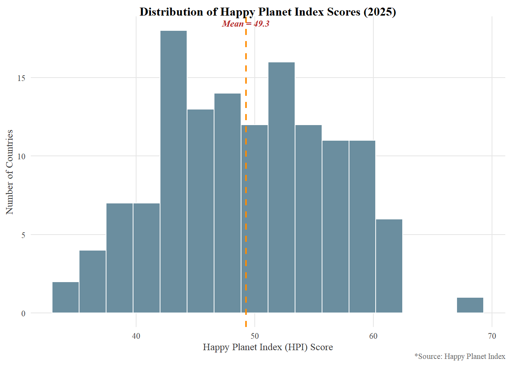
abline() and text() placed the mean line and label in two direct calls, while ggplot2 needed geom_vline() plus a separate annotate() layer. Slightly more verbose in ggplot2, but not meaningfully harder.
ggplot(cont_avg, aes(x = reorder(Continent, mean_HPI), y = mean_HPI, fill = Continent)) +
geom_col(width = 0.7) +
geom_text(aes(label = round(mean_HPI, 1)), vjust = -0.5, size = 3.2, family = "serif") +
scale_fill_manual(values = setNames(rainbow, cont_avg$Continent)) +
scale_x_discrete(labels = scales::label_wrap(10)) +
scale_y_continuous(expand = expansion(mult = c(0, 0.15))) +
labs(title = "Average HPI Score by Continent (2025)", x = "Continent", y = "Mean HPI Score",
caption = "*Source: Happy Planet Index") +
theme_mine() +
theme(legend.position = "none", plot.caption = element_text(hjust = 1))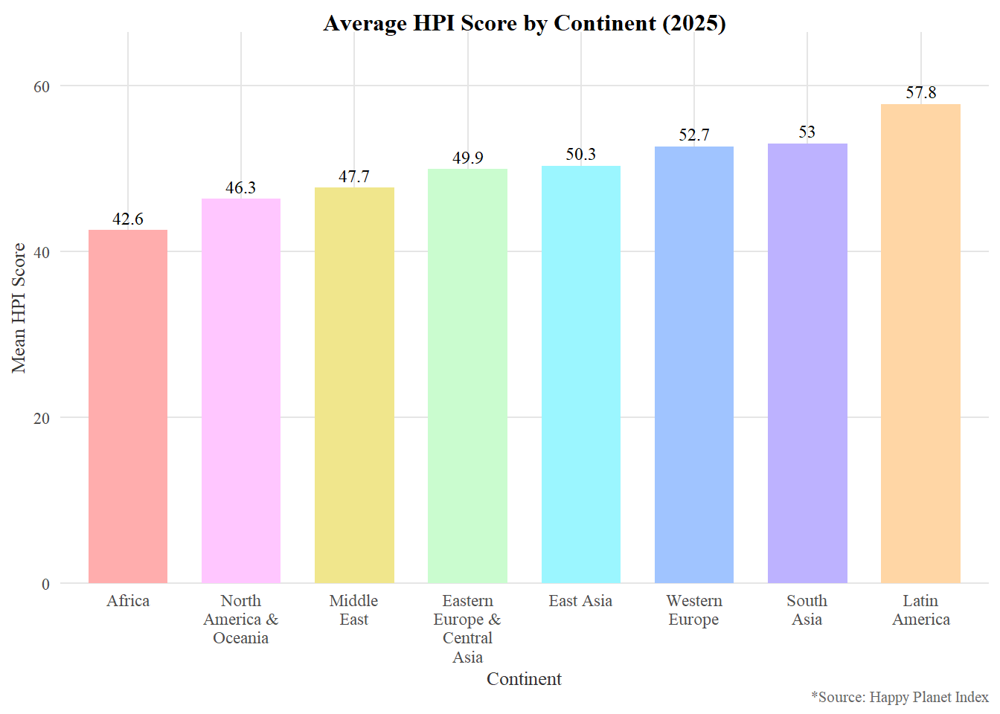
ggplot(cont_avg, aes(x = reorder(Continent, mean_HPI), y = mean_HPI, fill = Continent)) +
geom_col(width = 0.7) +
geom_text(aes(label = round(mean_HPI, 1)), hjust = -0.2, size = 3.2, family = "serif") +
scale_fill_manual(values = setNames(rainbow, cont_avg$Continent)) +
scale_y_continuous(expand = expansion(mult = c(0, 0.15))) +
coord_flip() +
labs(title = "Average HPI Score by Continent (2025)", x = "Continent", y = "Mean HPI Score",
caption = "*Source: Happy Planet Index") +
theme_mine() +
theme(legend.position = "none", plot.caption = element_text(hjust = 1))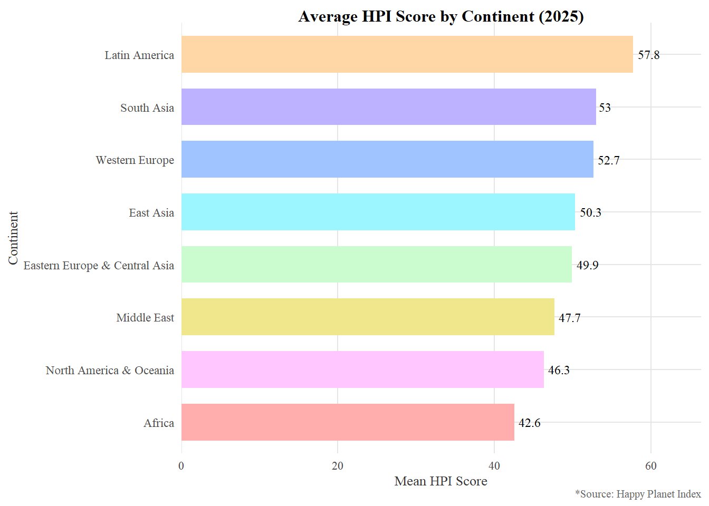
scale_x_discrete(labels = scales::label_wrap(10)) wrapped the long continent names in a single line, while base R required manually computing wrapped labels with strwrap() and positioning them by hand with text() to avoid clipping.
pie_data <- as.data.frame(cont_count)
names(pie_data) <- c("Continent", "n")
pie_data$pct <- pie_data$n / sum(pie_data$n) * 100
pie_data$Continent <- factor(pie_data$Continent, levels = cont_avg$Continent)
ggplot(pie_data, aes(x = "", y = n, fill = Continent)) +
geom_col(width = 1, color = "white") +
coord_polar(theta = "y") +
scale_fill_manual(values = setNames(rainbow, cont_avg$Continent)) +
geom_text(aes(label = paste0(round(pct, 1), "%")),
position = position_stack(vjust = 0.5), size = 3, family = "serif") +
labs(title = "Share of Countries by Continent, 2025", caption = "*Source: Happy Planet Index") +
theme_mine() +
theme(axis.title = element_blank(), axis.text = element_blank(),
panel.grid = element_blank(), plot.caption = element_text(hjust = 1))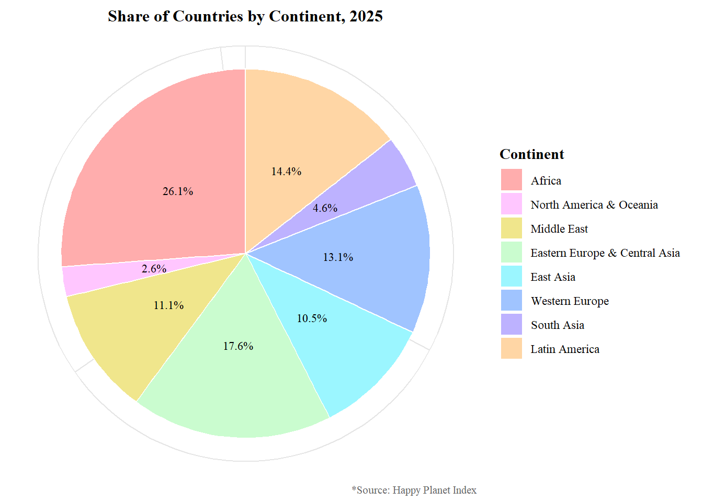
pie() is purpose-built for this exact chart type. ggplot2 has no native pie geom, so it had to be faked with geom_col() plus coord_polar(), which works but feels like a workaround rather than a first-class chart type.
ggplot(hpi2025, aes(x = Continent, y = HPI, fill = Continent)) +
geom_boxplot(outlier.color = "gray30") +
geom_hline(yintercept = median(hpi2025$HPI, na.rm = TRUE), color = "firebrick", linetype = "dashed") +
annotate("text", x = Inf, y = median(hpi2025$HPI, na.rm = TRUE), label = "Overall\nmedian",
hjust = 1.1, vjust = -0.3, color = "firebrick", size = 3, family = "serif") +
scale_fill_manual(values = setNames(rainbow, cont_avg$Continent)) +
scale_x_discrete(labels = scales::label_wrap(10)) +
labs(title = "Distribution of HPI Scores by Continent (2025)", x = "Continent",
y = "Happy Planet Index (HPI) Score", caption = "*Source: Happy Planet Index") +
theme_mine() +
theme(legend.position = "none", plot.caption = element_text(hjust = 1))Warning: Removed 19 rows containing non-finite outside the scale range
(`stat_boxplot()`).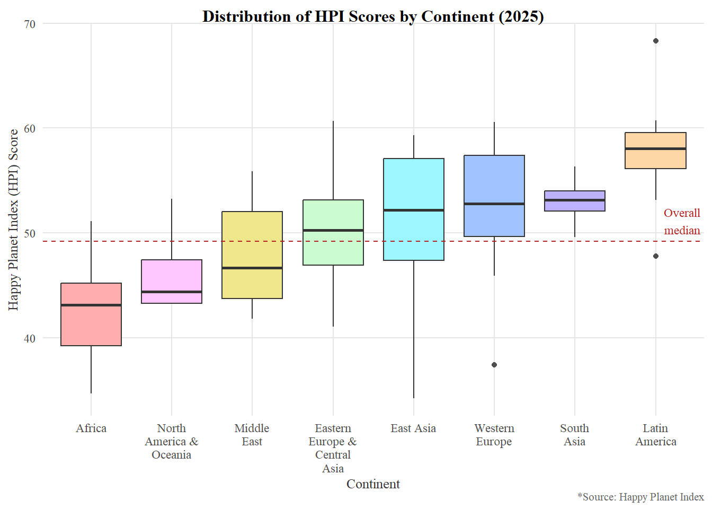
geom_boxplot() handled grouping and fill color mapping slightly more cleanly through aes(), with less manual margin tuning than base R’s par(mar = ...) adjustments.
ggplot(hpi2025, aes(x = `Ecological Footprint`, y = `Life Expectancy`, color = Continent)) +
geom_point(size = 2.5, alpha = 0.8) +
scale_color_manual(values = setNames(rainbow, cont_avg$Continent)) +
geom_text(data = hpi2025[which.max(hpi2025$`Life Expectancy`), ],
aes(label = Country), vjust = -0.8, size = 3, family = "serif", show.legend = FALSE) +
labs(title = "Life Expectancy vs. Ecological Footprint (2025)",
x = "Ecological Footprint (global hectares per person)", y = "Life Expectancy (years)",
color = "Continent", caption = "*Source: Happy Planet Index") +
theme_mine() +
theme(plot.caption = element_text(hjust = 1))Warning: Removed 6 rows containing missing values or values outside the scale range
(`geom_point()`).Warning: Removed 1 row containing missing values or values outside the scale range
(`geom_text()`).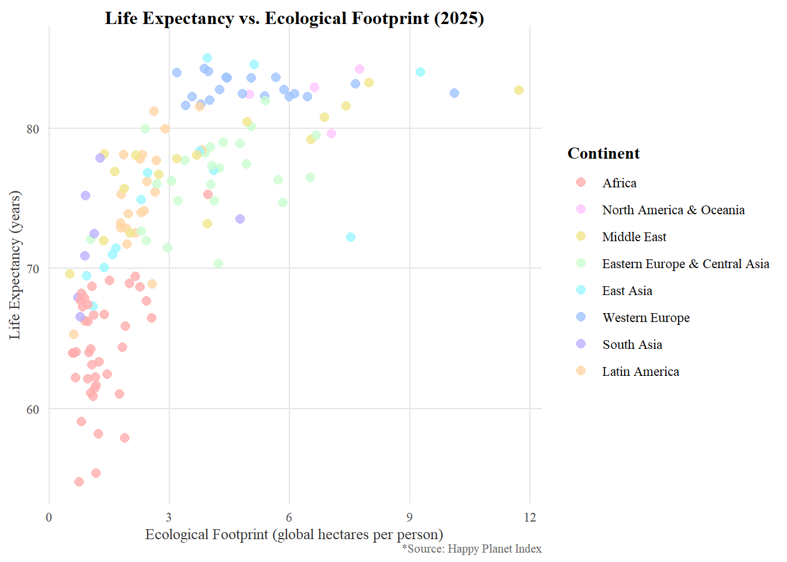
Continent and getting an automatic legend took one aes() argument and scale_color_manual(), versus base R needing a manual legend() call with hand-placed coordinates, title centering, and margin widening just to avoid the legend being clipped.
draw_scatter_base <- function() {
op <- set()
par(mar = c(5, 5, 4, 13), mgp = c(2.3, 1, 0), xpd = TRUE)
plot(hpi2025$`Ecological Footprint`, hpi2025$`Life Expectancy`,
col = adjustcolor(rainbow[as.numeric(hpi2025$Continent)], alpha.f = 0.8),
pch = 16, cex = 1.1,
main = "Life Expectancy vs. Ecological Footprint (2025)",
xlab = "Ecological Footprint (global hectares per person)",
ylab = "Life Expectancy (years)")
legend_labels <- gsub("Eastern Europe & Central Asia", "Eastern Europe &\nCentral Asia", levels(hpi2025$Continent))
legend_x <- par("usr")[2] * 1.05
y_range <- diff(par("usr")[3:4])
title_y <- par("usr")[4] - 0.02 * y_range
legend_y <- par("usr")[4] - 0.08 * y_range
leg <- legend(x = legend_x, y = legend_y, legend = legend_labels, col = rainbow,
pch = 16, cex = 0.65, bty = "n", y.intersp = 1.3)
center_x <- leg$rect$left + leg$rect$w / 2
text(x = center_x, y = title_y, labels = "Continent", font = 2, cex = 0.9, adj = 0.5)
top_country <- hpi2025[which.max(hpi2025$`Life Expectancy`), ]
text(top_country$`Ecological Footprint`, top_country$`Life Expectancy`,
labels = top_country$Country, pos = 3, cex = 0.7)
mtext("*Source: Happy Planet Index", side = 1, line = 3.5, cex = 0.7, adj = 1)
par(op)
}
png
2
png
2
png
2
png
2
p_scatter <- ggplot(hpi2025, aes(x = `Ecological Footprint`, y = `Life Expectancy`, color = Continent)) +
geom_point(size = 2.5, alpha = 0.8) +
scale_color_manual(values = setNames(rainbow, cont_avg$Continent)) +
geom_text(data = hpi2025[which.max(hpi2025$`Life Expectancy`), ],
aes(label = Country), vjust = -0.8, size = 3, family = "serif", show.legend = FALSE) +
labs(title = "Life Expectancy vs. Ecological Footprint (2025)",
x = "Ecological Footprint (global hectares per person)", y = "Life Expectancy (years)",
color = "Continent", caption = "*Source: Happy Planet Index") +
theme_mine() +
theme(plot.caption = element_text(hjust = 1))
ggsave("scatter_ggplot.pdf", p_scatter, width = 6.5, height = 4, units = "in")Warning: Removed 6 rows containing missing values or values outside the scale range
(`geom_point()`).Warning: Removed 1 row containing missing values or values outside the scale range
(`geom_text()`).Warning: Removed 6 rows containing missing values or values outside the scale range
(`geom_point()`).
Removed 1 row containing missing values or values outside the scale range
(`geom_text()`).Warning: Removed 6 rows containing missing values or values outside the scale range
(`geom_point()`).
Removed 1 row containing missing values or values outside the scale range
(`geom_text()`).Warning: Removed 6 rows containing missing values or values outside the scale range
(`geom_point()`).
Removed 1 row containing missing values or values outside the scale range
(`geom_text()`).Warning: Removed 6 rows containing missing values or values outside the scale range
(`geom_point()`).
Removed 1 row containing missing values or values outside the scale range
(`geom_text()`).Warning: Removed 6 rows containing missing values or values outside the scale range
(`geom_point()`).
Removed 1 row containing missing values or values outside the scale range
(`geom_text()`).
Cleveland and McGill (1984) ranked how accurately people judge different visual encodings, and found that position along a common scale and length are judged far more accurately than angle and area, the two encodings a pie chart relies on. This is the core case against pie charts: comparing two slices’ sizes is a genuinely harder perceptual task than comparing two bar heights, especially once slices are close in size or there are more than a handful of categories.
That said, a pie chart is defensible when the message is proportion of a true whole rather than precise ranking. My pie chart shows the share of countries by continent in 2025, a genuine 100%-total quantity (every country belongs to exactly one continent), with only eight categories and each slice directly labeled with its percentage rather than left for the eye to estimate from angle alone. In that narrow case, the circle itself reinforces the “parts of one whole” framing better than a bar chart would, and the labels remove the need for precise angle judgment entirely. Outside that case, when categories exceed roughly six, slices are close in size, or the data isn’t a true total, a bar chart remains the better choice.